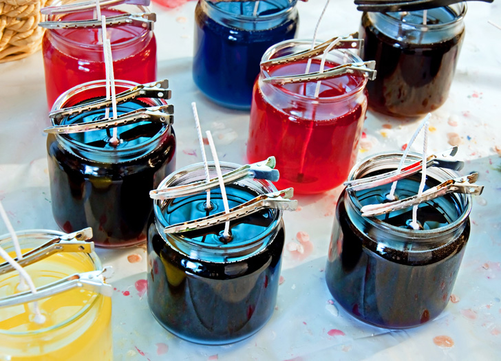

Robienie Świec
W dzisiejszych czasach, kiedy pomyślimy o źródłach światła, prawdopodobnie na myśl przyjdzie nam żarówka. Wybór ten jeszcze kilkaset lat temu nie byłby taki oczywisty, a zdecydowanie popularniejsza od żarówki byłaby świeca. Wytwarzanie świec może wydawać się archaiczne i skomplikowane, ale wbrew pozorom tak nie jest. Aby stworzyć świecę wystarczy odrobina wosku, forma i knot. Przy robieniu świec możecie spędzić czas z rodziną, a także zabezpieczyć się na wypadek awarii prądu.
Filmik o robieniu własnej świeczki
